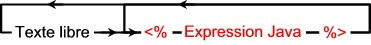
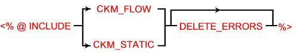

The methods that are accessible from the Knowledge Modules and from the procedures are direct calls to Oracle Data Integrator methods implemented in Java™. These methods are usually used to generate some text that corresponds to the metadata stored into the Oracle Data Integrator repository.
The substitution methods are used in any text of a task of a Knowledge Module or of a procedure. The syntax to use is the following:

Where:
Free text: any text of a task in the language of the desired technology.
Java expression: any Java expression that allows the construction of a string.
Java expression example:
odiRef.getTableName("WORK_TABLE") + "FUTURE"
The Oracle Data Integrator API is implemented in the Java class OdiReference,
whose instance OdiRef is available at any time. Thus, to call the Data
Integrator method getFrom(), you have to write odiRef.getFrom().
Note: The previous syntax snpRef.<method_name> is still supported but deprecated.
The following syntax is used in a IKM to call the execution of a check procedure (CKM).
This syntax automatically includes all the CKM procedure commands at this point of in the processing.

The options for this syntax are:
CKM_FLOW: triggers a flow control, according to the CKM choices made in the Control tab of the Interface.
CKM_STATIC: Triggers a static control of the target datastore. Constraints defined for the datastore and selected as Static constraints will be checked.
DELETE_ERRORS: This option causes automatic suppression of the errors detected.
Flexfields are user-defined fields enabling to customize the properties of Oracle Data Integrator' objects. Flexfields are defined on the Flexfield tab of the object window and can be set for each object instance through the Flexfield tab of the object window.
When accessing an object properties through Oracle Data Integrator' substitution methods, if you specify the Flexfield Code, Oracle Data Integrator will substitute the Code by the flexfield value for the object instance.
For instance:
<%=odiRef.getTable("L", "MY_DATASTORE_FIELD", "W")%> will return the value of the flexfield MY_DATASTORE_FIELD for the current table.
<%=odiRef.getSrcTableList("", "[MY_DATASTORE_FIELD] ", ", ", "")%> will return the flexfield value for each of the source tables of the interface.
It is also possible to get the value of a flexfield through the getFlexFieldValue() method.
Important: Flexfield exist only for certain object type. Objects that do not have a flexfield tab do not support them.